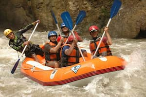
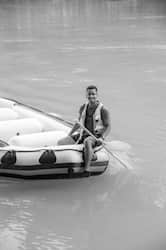

Our mission is to provide unforgettable rafting adventures while promoting safety, environmental stewardship, and creating lasting memories for every adventurer.


White Water Rafting Co.
History
Founded in 1995 by outdoor enthusiasts, White Water Rafting Co. started with just two rafts and a passion for adventure. Over the years, we've grown to become one of the premier rafting companies in the region, offering guided tours for beginners and experts alike. Our commitment to safety and environmental preservation has remained constant throughout our journey.